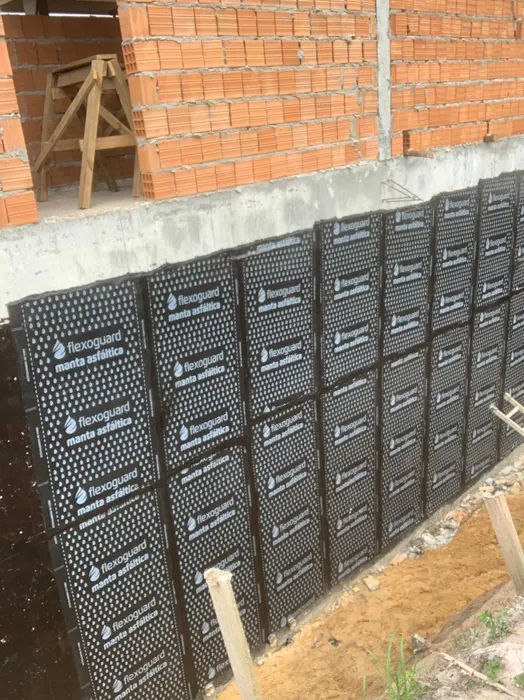
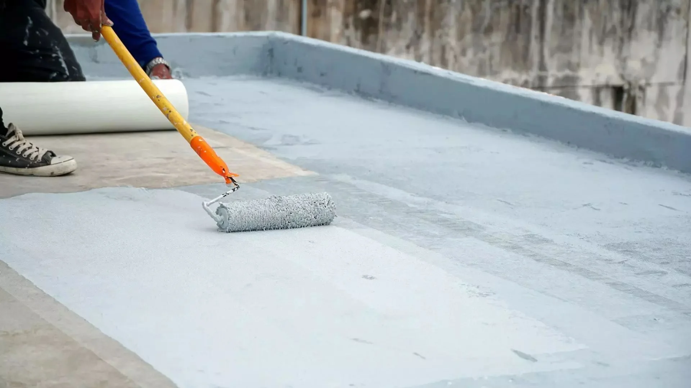
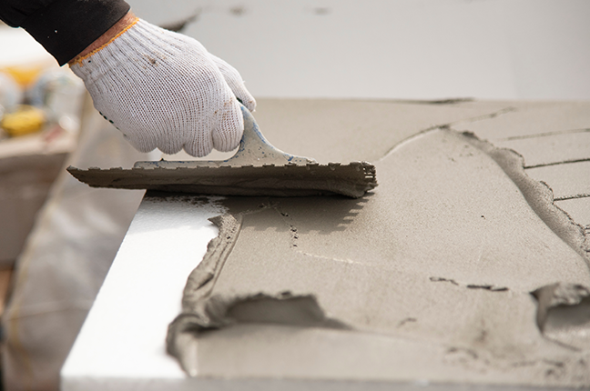

Laje residencial em condomínio
Manta asfálticaBase regularizada e imprimada, manta aplicada a maçarico com sobreposição mínima de 10 cm entre os rolos e rodapé subindo na platibanda para a água não entrar pela junta da parede.
Lajes, coberturas, terraços, piscinas, baldrames e reservatórios. O sistema certo para cada área, aplicado conforme a NBR 9574.
8 anos atendendo construtoras e engenheiros no Litoral Norte de SC.
Fotos do nosso relatório de obra, com o que foi feito em cada uma e por quê.
Base regularizada e imprimada, manta aplicada a maçarico com sobreposição mínima de 10 cm entre os rolos e rodapé subindo na platibanda para a água não entrar pela junta da parede.

Manta na face externa da parede, do baldrame até acima do nível do terreno, aplicada antes do reaterro. Barra a umidade do solo que subiria pelas paredes da casa.

Laje regularizada com caimento para os ralos, manta com rodapés nas paredes e arremate nos ralos. Depois do teste, recebe proteção mecânica e o piso por cima.

Fundo e paredes revestidos em sequência, com reforço nos cantos e nas passagens de tubulação, que são os pontos onde a água costuma achar caminho.

A obra da foto anterior durante a chuva: com as emendas seladas, a água escorre pela superfície até os ralos sem penetrar nas sobreposições.
Vídeos gravados pela nossa equipe durante a execução: preparo, aplicação e acabamento.
Cada área recebe o sistema indicado para o tipo de água que enfrenta: chuva, umidade do solo, pressão ou água parada.
Manta asfáltica com proteção mecânica, rodapés subindo nas platibandas e sobreposições seladas.
Manta asfálticaSob o piso, com rodapés, ralos e soleiras.
Manta asfáltica · líquidaEstrutura impermeabilizada antes do revestimento.
Manta · argamassa poliméricaContra a umidade do solo que sobe pelas paredes.
Manta asfálticaSistemas compatíveis com água potável.
Argamassa poliméricaCom proteção contra raízes.
Manta asfálticaBanheiros, box, cozinhas e lavanderias.
Manta líquidaLajes, poços de elevador e contenções.
CristalizanteNão existe um produto que resolve tudo. A especificação muda conforme a área recebe sol, pressão de água, tráfego ou água potável.




A impermeabilização some debaixo do piso no dia em que fica pronta. Se falhar, o problema aparece meses depois, com a obra já entregue.
Corrigir uma infiltração depois da entrega exige quebrar piso, revestimento e acabamento já pagos, e pagar a mão de obra de novo.
Infiltração contínua leva umidade ao concreto e às armaduras: corrosão, manchas e descolamento.
Chamados de assistência atrasam a próxima obra e pesam na reputação da construtora e do engenheiro.
Nosso compromisso: sistema certo para cada área, execução conforme norma e entrega testada.
Cada etapa fica registrada em relatório fotográfico, para o engenheiro e para o arquivo da obra.
Levantamento no local: áreas, medidas, cronograma e condições da base.
Sistema definido por área conforme a NBR 9575, com orçamento detalhado.
Limpeza, regularização com caimento mínimo de 1% para os ralos e cantos arredondados.
Conforme a NBR 9574: imprimação, sobreposições e rodapés de no mínimo 30 cm.
Lâmina d'água mantida por 72 horas antes de liberar a área.
Proteção mecânica, relatório fotográfico e garantia por escrito.
Para construtoras e engenheiros que precisam de impermeabilização no cronograma, sem dor de cabeça no pós-obra.
Aplicadores treinados e um responsável único do início ao fim.
Projeto e aplicação seguindo a NBR 9575 e a NBR 9574.
Nenhuma área liberada sem 72 horas de lâmina d'água.
Cada etapa registrada para o engenheiro e para o arquivo da obra.
Planejamento alinhado à obra, sem travar as próximas equipes.
Garantia por escrito e documentação completa do serviço.
Cada vídeo é de um trabalho real da ImperTech no Litoral Norte.
Três passos para ter a ImperTech na sua obra.
Vamos até a obra e levantamos todas as áreas a impermeabilizar.
Orçamento detalhado, com o sistema indicado para cada ambiente.
Entramos na etapa certa da obra e entregamos tudo testado.
Atendemos: